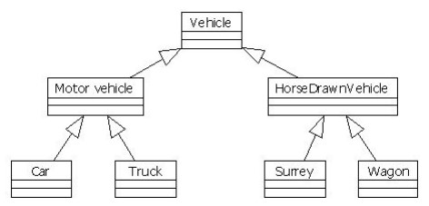

19. ZÁKLADY OBJEKTOVÉHO PROGRAMOVÁNÍ V C++
Vznik objektově orientovaného programování
První počítače dostávaly příkazy ve formě strojového kódu, což pro lidi, kteří se o IT nezajímali bylo naprosto nepředstavitelné, ale software ani hardware nebyl na takové úrovni, aby příkazy pro procesor dosáhly nějaké větší složitosti.
S vývojem počítačů se kladly větší nároky i na programy a vyvinulo se nestrukturované paradigma, tedy jakýsi soubor příkazů, který procesor vykonával, a vzniklo tak strukturované programování, tedy seznam přikazů, které procesor vykonává podle jejich pořadí od shora dolů.
Ke vzniku objektově orientovaného programování napomohl neustálý vývoj počítačových systémů a samotných počítačů. S přibývajícími nároky na programátory v komplexnosti programů se strukturovaně programovaný kód stávál nepřehledným, při větších objemech kódu i neudržovatlný a proto se musel vytvořit nový přístup k programování. Objektově orientovaný přístup k programování.
Podstata objektově orientovaného programování
Objektově orientované programování se zakládá na několika základních pilířích a dává se v něm důraz na znovupoužitelnost kódu a dává programátorovi jistou vrstvu abstrakce nad programem.
| Point |
|---|
|
-x:int = 0 -y:int = 0 |
|
+Point(x:int, y:int) +getX():int +setX(x:int):void +getY():int +setY(y:int):void +setXY(x:int, y:int):void +print():void |
V tomto přístupu k programování se programátor snaží popsat svět jak ho vidí on a ne jak ho vidí počítač a píše program z pohledu člověka a to mu dává tu jistou abstrakci.
Základní jednotka objektového programování je objekt. Jedná se o entitu, která odpovídá objektům z reálného světa. Například Pes, pes má 4 nohy, hlavu, oči a může mít i jméno, ještě k tomu štěká. Objekt by se v programovaní popsal Atributy (vlastnostmi objektu) a Metodami(schopnostmi objektu).
Z těchto objektů programátor postupně vytváří hierarchii objektů, které mezi sebou mohou komunikovat a v hierarchii na sobě být nějakým způsobem závislé. O tuto hierarchii se starají tři zmíněné pilíře a to jsou:
1. Zapouzdření
Jedná se o uschování atributů nebo metod objektu od okolních objektů pomocí přístupových modifikátorů, může sloužit pro účel nadřazenosti v hierarchii, ale je také důležité při zabezpečení programu a kontrolujeme tak, k čemu má program vlastně sám bez zásahu programátora přístup a také chrání program před špatným použití takto schovaných metod nebo proměnných.
Přístupové modifikátory
-
1. public
- přístupné odkudkoliv
-
2. private
- proměnná nebo metoda není přístupná nikde jinde než ve třídě, ve které byla definována
- pokud ve třídě(v jiných datových strukturách může fungovat jinak) nespecifikujeme přístupový modifikátor, program proměnnou nebo metodu sám definuje na private
- pokud chceme k private proměnné přistoupit z jiné třídy musíme vytvořit public metodu, ve třídě kde je proměnná definována, která s ní může manipulovat
-
3. protected
- v c++ nejsou žádné balíčky, takže neplést s javou (:
- proměnné a metody s modifikátorem protected jsou přístupné pro třídu, ve které jsou definovány a ve třídě, která dědí od třídy ve které jsou definovány.
2. Dědičnost
Tvoří vlastně celou hierarchii objektů a stará se tak o celou vrstvu abstrakce nad programem. Jedná se o dědění atributů a metod z rodičovské třídy a třída, která dědí se tak stává dědící třídou. Využívá se u objektů, které sdílí více stejných atributů nebo metod a podporuje se tak znovu použitelnost kódu.
3. Polymorfismus
Nám umožňuje používat stejné atributy a metody pro různé druhy objektů. Například u geometrických tvarů si můžeme vytvořit rodičovskou třídu geometrickyObjekt a dvě dědící třídy čtverec a obdélník, pokud bychom chtěli vypočítat obsah obou dědících tříd museli bychom udělat dvě různojmené metody. Polymorfismus zajisti to, že můžeme udělat jen jednu metodu v rodičovské třídě a každá dědící třída už si přepíše svou implementaci teto metody, tedy vzorec na výpočet obsahu čtverce a obdélníku.
Třída vs Instance třídy
Třída je vzor, podle kterého se objekt následně vytváří. Definuji se v ni vsechny atributy a metody.
Instance třídy je objekt vytvořen podle třídy. Instance třídy mají tedy strukturu třídy, podle které byly vytvořeny, ale liší se svými daty, jako například jménem.
Deklarace třídy
Jak je zmíněno výš, třída je vlastně jen vzor, podle kterého se poté vytvářejí samotné objekty. Samotná třída v sobě tedy neuchovává data, ale pouze specifikuje jaké data v sobě objekt bude uchovávat a jaké činnosti bude moct objekt dělat.
Definice třídy začíná klíčovým slovem class, jménem třídy a tělem třídy, které je uzavřené složenými závorkami. Celá deklarace třídy musí být ukončena středníkem, nebo seznamem objektů, které ze třídy chceme vytvořit.
class Box {
public:
double length;
// délka boxu
double breadth;
// šířka boxu
double height;
// výška boxu
};
Definice objektu
Je ve zkratce operace, kdy se vytváří samotný objekt, podle předložené třídy. Takže se definice objektu skládá ze jména třídy, podle které se náš objekt vytvoří a jménem námi vytvořeného objektu.
Box box1;
Box box2;
Přístup ke členům objektu
K členským proměnným a metodám se přistupuje v c++ pomocí tečky (.). Celý přístup k proměnné nebo metodě vypadá tak, že označíme, do kterého objektu chceme přistoupit a pak jen zvolíme proměnnou, ke které chceme přistoupit a která se nachází v námi zvoleném objektu. Takto přímo lze přistoupit pouze k proměnným s modifikátorem public. Pokud se jedná o private nebo protected a chceme k nim přistoupit, tak musíme vytvořit public metody, které s nimi budou moct manipulovat. Nazývají se getry a setry. Getry na získání hodnoty proměnné a Setry na nastavení hodnoty proměnné
Box box1;
Box box2;
double volume =
0.0;
// proměnná objem
// vlastnosti boxu 1
box1.height =
5.0;
box1.height =
6.0;
box1.height =
7.0;
// vlastnosti boxu 2
box2.height =
10.0;
box2.height =
12.0;
box2.height =
13.0;
Definice metod
Metoda třídy je definována v jejím těle pomocí jejího návratového typu, jejího jména, parametrů,které metoda přijímá v kulatých závorkách a jejím tělem, uzavřeným ve složených závorkách.
double
getVolume(void) {
return length * breadth
* height;
}
Metodu můžeme definovat v těle třídy a nebo mimo tělo třídy pomocí operátoru (::) (scope resolution operator) . Pokud však nedefinujeme metodu v těle třídy, musíme v něm udělat předlohu metody.
double
Box::getVolume(void) {
return length * breadth
* height;
}
Metody v objektu mají přístup ke všem proměnným a to i k proměnným s jinými modifikátory než public, což se hodí při manipulaci s private nebo protected proměnnýma.
Const metoda
Metoda označená klíčovým slovem const může pouze číst členské proměnné a nemůže je nijak upravit. Používá se k ochraně před nechtěným změněním proměnných v objektu.
int getArea()
const {
return m_len * m_width;
}
Ukazatel this
Každý objekt má v c++ k dispozici přístup ke své adrese pomocí ukazatele this. Ukazatel this je bezpodmínečně přístupný všem členským metodám a tak v nich tedy takto můžeme ukázat na objekt, který danou metodu volá.
int
compare(Box
box) {
return
this->Volume()
> box.Volume();
}
Konstruktor
Kostruktor je speciální metoda, která nese stejné jméno jako třída, ve které se nachází a spouští se pokaždé, když je ze třídy vytvořen objekt. Základní konstruktor nemá parametry, ale pokud potřebujeme můžeme mu je přidat a použít tak kostruktor pro dosazení počátečních hodnot do objektu
Destruktor
Destruktor je stejný jako konstruktor jen s drobnými rozdíly. Prvním z nich je, že před destruktor se píše ~ (tilda) a druhým je to, že se destruktor volá při ničení objektu, tedy stavu, kdy na objekt nic neukazuje a garbage collector ho smaže nebo při manuálním smazání.
class Line {
public:
void
setLength(double
len);
double
getLength(void);
Line();
// deklarace konstruktoru
~Line();
// deklarace destruktoru
private:
double length;
};
Statické a dynamické instance třídy
Staticky definovaná instance třídy
Staticky definovaná instance třídy se zničí na konci bloku kódu, ve kterém je definována zatím co o zničení dynamicky definované instanci třídy rozhoduje programátor pomocí příkazu delete[]. Rozdílný je taky přístup ke členům instancí. Při statické definici se používá tečka(.), zatím co u dynamické definice se používá šipka(→).
Time t(12,
0, 0);
t.GetTime();
Dynamicky definovaná instance třídy
Dynamicky definovaná třída je v podstatě ukazatel na objekt, proto také ten jiný přístup ke členům
Time* t = new
Time(12,
0, 0);
t->GetTime();